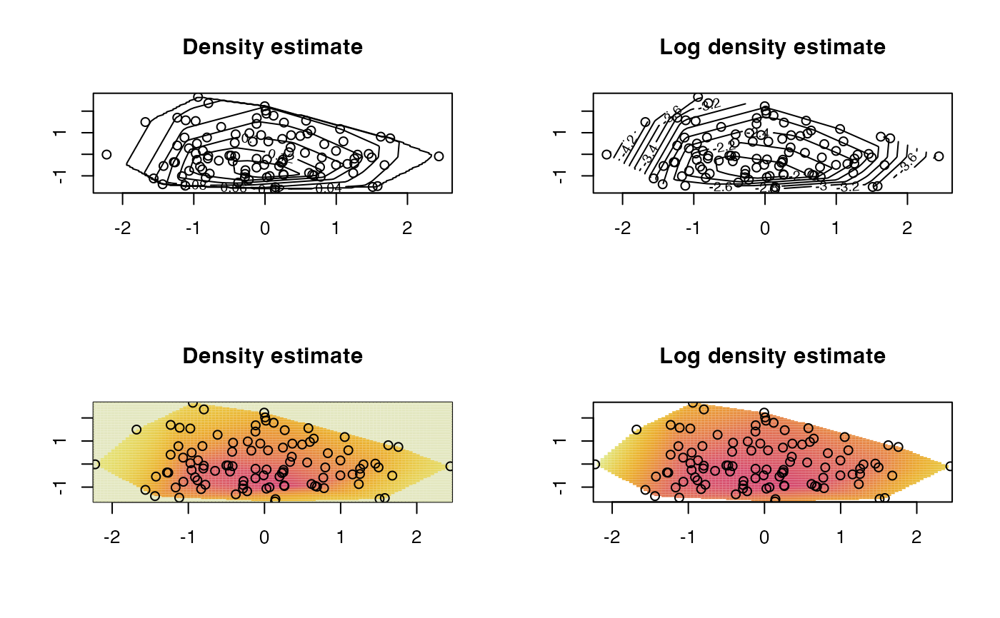

Computes a log-concave (maximum likelihood) estimator for i.i.d. data in any number of dimensions
LogConcDEAD-package.RdThis package contains a function to compute the maximum likelihood estimator of a log-concave density in any number of dimensions using Shor's \(r\)-algorithm.
Functions to plot (for 1- and 2-d data), evaluate and draw samples from the maximum likelihood estimator are provided.
Details
This package contains a selection of functions for maximum likelihood estimation under the constraint of log-concavity.
mlelcd computes the maximum likelihood estimator
(specified via its value at data points). Output is a list of class
"LogConcDEAD" which is used as input to various auxiliary functions.
hatA calculates the difference between the sample covariance and the fitted covariance.
dlcd evaluates the estimated density at a particular point.
dslcd evaluates the smoothed version of estimated density at a particular point.
rlcd draws samples from the estimated density.
rslcd draws samples from the smoothed version of estimated density.
interplcd interpolates the estimated density on
a grid for plotting purposes.
dmarglcd evaluates the estimated marginal density by
integrating the estimated density over an appropriate subspace.
interpmarglcd evaluates a marginal density estimate at
equally spaced points along the axis for plotting purposes. This is
done by integrating the estimated density over an appropriate subspace.
plot.LogConcDEAD produces plots of the maximum likelihood
estimator, optionally using the rgl package.
Note
The authors gratefully acknowledge the assistance of Lutz Duembgen at the University of Bern for his insight into the objective function in mlelcd.
For one dimensional data, the active set algorithm in
logcondens is much faster.
References
Barber, C.B., Dobkin, D.P., and Huhdanpaa, H.T. (1996) The Quickhull algorithm for convex hulls ACM Trans. on Mathematical Software, 22(4) p.469-483 http://www.qhull.org
Chen, Y. and Samworth, R. J. (2013) Smoothed log-concave maximum likelihood estimation with applications Statist. Sinica, 23, 1373-1398. https://arxiv.org/abs/1102.1191v4
Cule, M. L. and D\"umbgen, L. (2008) On an auxiliary function for log-density estimation, University of Bern technical report. https://arxiv.org/abs/0807.4719
Cule, M. L., Samworth, R. J., and Stewart, M. I. (2010) Maximum likelihood estimation of a multi-dimensional log-concave density J. Roy. Statist. Soc., Ser. B. (with discussion), 72, 545-600.
Gopal, V. and Casella, G. (2010) Discussion of Maximum likelihood estimation of a log-concave density by Cule, Samworth and Stewart J. Roy. Statist. Soc., Ser. B., 72, 580-582.
Grundmann, A. and Moeller, M. (1978) Invariant Integration Formulas for the N-Simplex by Combinatorial Methods SIAM Journal on Numerical Analysis, Volume 15, Number 2, 282-290.
Kappel, F. and Kuntsevich, A. V. (2000) An implementation of Shor's r-algorithm Computational Optimization and Applications, Volume 15, Issue 2, 193-205.
Shor, N. Z. (1985) Minimization methods for nondifferentiable functions Springer-Verlag
See also
logcondens,
rgl
Examples
## Some simple normal data, and a few plots
x <- matrix(rnorm(200),ncol=2)
lcd <- mlelcd(x)
g <- interplcd(lcd)
par(mfrow=c(2,2), ask=TRUE)
plot(lcd, g=g, type="c")
plot(lcd, g=g, type="c", uselog=TRUE)
plot(lcd, g=g, type="i")
plot(lcd, g=g, type="i", uselog=TRUE)

## Some plots of marginal estimates
par(mfrow=c(1,1))
g.marg1 <- interpmarglcd(lcd, marg=1)
g.marg2 <- interpmarglcd(lcd, marg=2)
plot(lcd, marg=1, g.marg=g.marg1)
plot(lcd, marg=2, g.marg=g.marg2)
## generate some points from the fitted density
generated <- rlcd(100, lcd)
genmean <- colMeans(generated)
## evaluate the fitted density
mypoint <- c(0, 0)
dlcd(mypoint, lcd, uselog=FALSE)
#> [1] 0.1243162
mypoint <- c(10, 0)
dlcd(mypoint, lcd, uselog=FALSE)
#> [1] 0
## evaluate the marginal density
dmarglcd(0, lcd, marg=1)
#> [1] 0.3999072
dmarglcd(1, lcd, marg=2)
#> [1] 0.2271997